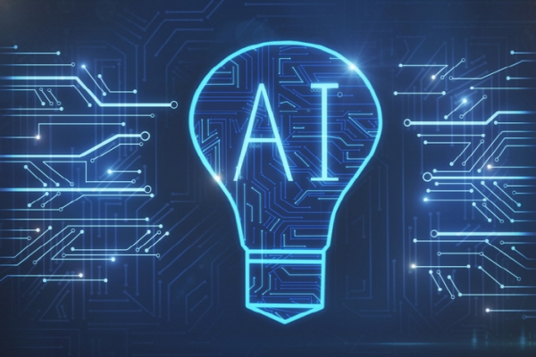
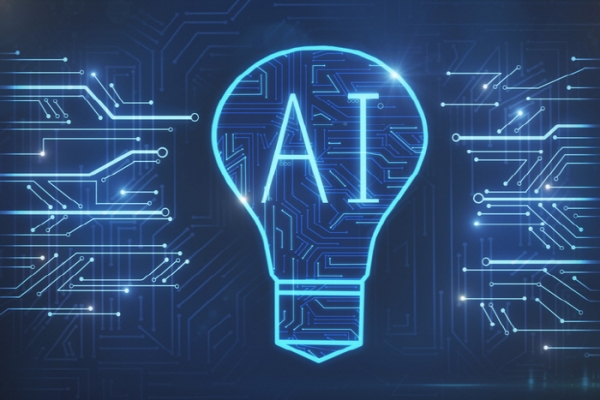

Information technology (IT) is the use of computers to store, retrieve, transmit, and manipulate data[1] or information. IT is typically used within the context of business operations as opposed to personal or entertainment technologies.[2] IT is considered to be a subset of information and communications technology (ICT). An information technology system (IT system) is generally an information system, a communications system or, more specifically speaking, a computer system – including all hardware, software and peripheral equipment – operated by a limited group of users.